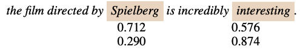
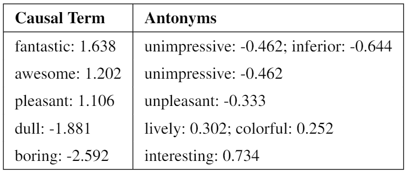
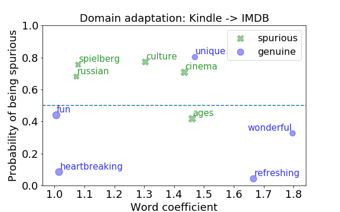
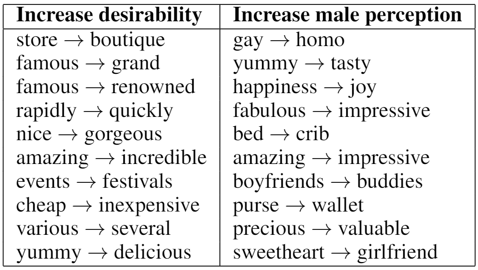
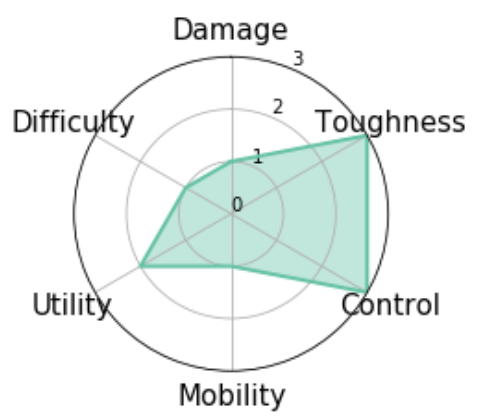
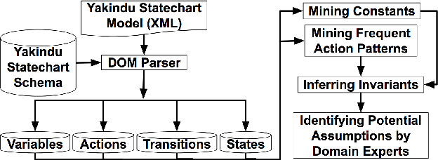

|
|
Research Interests
- Causal Text Analysis: exploring causes, effects, and causal relationships in natural language.
- Robust models for Text Analysis: developing simple, robust, fair, transparent, and interpretable machine learning models.
- Fair and Trustable AI for social good: applying AI techniques to get insights into social issues (e.g., public health, social bias, fake news, bot detection, cyberbullying, sentiment analysis, human well-being, personality and behavior) and provide practical solutions.
Selected Publications

Enhancing Model Robustness and Fairness with Causality: A Regularization Approach
Zhao Wang, Kai Shu, Aron Culotta.
EMNLP, the First Workshop on Causal Inference and NLP, 2021.
[Paper]
Zhao Wang, Kai Shu, Aron Culotta.
EMNLP, the First Workshop on Causal Inference and NLP, 2021.
[Paper]

Robustness to Spurious Correlations in Text Classification via Automatically Generated Counterfactuals.
Zhao Wang, Aron Culotta.
In Thirty-Fifth Association for the Advancement of Artificial Intelligence Conference (AAAI), 2021.
[Paper]
Zhao Wang, Aron Culotta.
In Thirty-Fifth Association for the Advancement of Artificial Intelligence Conference (AAAI), 2021.
[Paper]



Personality and Behavior in Team-based Online Games.
Zhao Wang, Anna Sapienza, Aron Culotta and Emilio Ferrara.
In IEEE Conference on Games (COG), 2019.
[Paper]
Zhao Wang, Anna Sapienza, Aron Culotta and Emilio Ferrara.
In IEEE Conference on Games (COG), 2019.
[Paper]

-->
IAfinder: identifying potential implicit assumptions to facilitate validation in medical cyber-physical system.
Zhicheng Fu, Zhao Wang, Chunhui Guo, Zhenyu Zhang, Shangping Ren, Lui Sha.
Design Automation Conference (DAC), 2018.
[Paper]
Zhicheng Fu, Zhao Wang, Chunhui Guo, Zhenyu Zhang, Shangping Ren, Lui Sha.
Design Automation Conference (DAC), 2018.
[Paper]